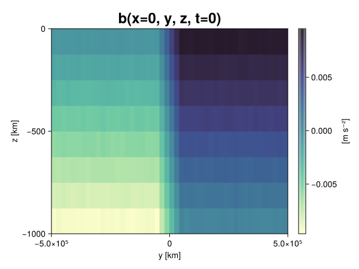

Baroclinic adjustment
In this example, we simulate the evolution and equilibration of a baroclinically unstable front.
Install dependencies
First let's make sure we have all required packages installed.
using Pkg
pkg"add Oceananigans, CairoMakie"using Oceananigans
using Oceananigans.UnitsGrid
We use a three-dimensional channel that is periodic in the x direction:
Lx = 1000kilometers # east-west extent [m]
Ly = 1000kilometers # north-south extent [m]
Lz = 1kilometers # depth [m]
grid = RectilinearGrid(size = (48, 48, 8),
x = (0, Lx),
y = (-Ly/2, Ly/2),
z = (-Lz, 0),
topology = (Periodic, Bounded, Bounded))48×48×8 RectilinearGrid{Float64, Periodic, Bounded, Bounded} on CPU with 3×3×3 halo
├── Periodic x ∈ [0.0, 1.0e6) regularly spaced with Δx=20833.3
├── Bounded y ∈ [-500000.0, 500000.0] regularly spaced with Δy=20833.3
└── Bounded z ∈ [-1000.0, 0.0] regularly spaced with Δz=125.0Model
We built a HydrostaticFreeSurfaceModel with an ImplicitFreeSurface solver. Regarding Coriolis, we use a beta-plane centered at 45° South.
model = HydrostaticFreeSurfaceModel(; grid,
coriolis = BetaPlane(latitude = -45),
buoyancy = BuoyancyTracer(),
tracers = :b,
momentum_advection = WENO(),
tracer_advection = WENO())HydrostaticFreeSurfaceModel{CPU, RectilinearGrid}(time = 0 seconds, iteration = 0)
├── grid: 48×48×8 RectilinearGrid{Float64, Periodic, Bounded, Bounded} on CPU with 3×3×3 halo
├── timestepper: QuasiAdamsBashforth2TimeStepper
├── tracers: b
├── closure: Nothing
├── buoyancy: BuoyancyTracer with ĝ = NegativeZDirection()
├── free surface: ImplicitFreeSurface with gravitational acceleration 9.80665 m s⁻²
│ └── solver: FFTImplicitFreeSurfaceSolver
├── advection scheme:
│ ├── momentum: WENO reconstruction order 5
│ └── b: WENO reconstruction order 5
└── coriolis: BetaPlane{Float64}We start our simulation from rest with a baroclinically unstable buoyancy distribution. We use ramp(y, Δy), defined below, to specify a front with width Δy and horizontal buoyancy gradient M². We impose the front on top of a vertical buoyancy gradient N² and a bit of noise.
"""
ramp(y, Δy)
Linear ramp from 0 to 1 between -Δy/2 and +Δy/2.
For example:
```
y < -Δy/2 => ramp = 0
-Δy/2 < y < -Δy/2 => ramp = y / Δy
y > Δy/2 => ramp = 1
```
"""
ramp(y, Δy) = min(max(0, y/Δy + 1/2), 1)
N² = 1e-5 # [s⁻²] buoyancy frequency / stratification
M² = 1e-7 # [s⁻²] horizontal buoyancy gradient
Δy = 100kilometers # width of the region of the front
Δb = Δy * M² # buoyancy jump associated with the front
ϵb = 1e-2 * Δb # noise amplitude
bᵢ(x, y, z) = N² * z + Δb * ramp(y, Δy) + ϵb * randn()
set!(model, b=bᵢ)Let's visualize the initial buoyancy distribution.
using CairoMakie
# Build coordinates with units of kilometers
x, y, z = 1e-3 .* nodes(grid, (Center(), Center(), Center()))
b = model.tracers.b
fig, ax, hm = heatmap(view(b, 1, :, :),
colormap = :deep,
axis = (xlabel = "y [km]",
ylabel = "z [km]",
title = "b(x=0, y, z, t=0)",
titlesize = 24))
Colorbar(fig[1, 2], hm, label = "[m s⁻²]")
fig
Simulation
Now let's build a Simulation.
simulation = Simulation(model, Δt=20minutes, stop_time=20days)Simulation of HydrostaticFreeSurfaceModel{CPU, RectilinearGrid}(time = 0 seconds, iteration = 0)
├── Next time step: 20 minutes
├── Elapsed wall time: 0 seconds
├── Wall time per iteration: NaN days
├── Stop time: 20 days
├── Stop iteration : Inf
├── Wall time limit: Inf
├── Callbacks: OrderedDict with 4 entries:
│ ├── stop_time_exceeded => Callback of stop_time_exceeded on IterationInterval(1)
│ ├── stop_iteration_exceeded => Callback of stop_iteration_exceeded on IterationInterval(1)
│ ├── wall_time_limit_exceeded => Callback of wall_time_limit_exceeded on IterationInterval(1)
│ └── nan_checker => Callback of NaNChecker for u on IterationInterval(100)
├── Output writers: OrderedDict with no entries
└── Diagnostics: OrderedDict with no entriesWe add a TimeStepWizard callback to adapt the simulation's time-step,
conjure_time_step_wizard!(simulation, IterationInterval(20), cfl=0.2, max_Δt=20minutes)Also, we add a callback to print a message about how the simulation is going,
using Printf
wall_clock = Ref(time_ns())
function print_progress(sim)
u, v, w = model.velocities
progress = 100 * (time(sim) / sim.stop_time)
elapsed = (time_ns() - wall_clock[]) / 1e9
@printf("[%05.2f%%] i: %d, t: %s, wall time: %s, max(u): (%6.3e, %6.3e, %6.3e) m/s, next Δt: %s\n",
progress, iteration(sim), prettytime(sim), prettytime(elapsed),
maximum(abs, u), maximum(abs, v), maximum(abs, w), prettytime(sim.Δt))
wall_clock[] = time_ns()
return nothing
end
add_callback!(simulation, print_progress, IterationInterval(100))Diagnostics/Output
Here, we save the buoyancy, $b$, at the edges of our domain as well as the zonal ($x$) average of buoyancy.
u, v, w = model.velocities
ζ = ∂x(v) - ∂y(u)
B = Average(b, dims=1)
U = Average(u, dims=1)
V = Average(v, dims=1)
filename = "baroclinic_adjustment"
save_fields_interval = 0.5day
slicers = (east = (grid.Nx, :, :),
north = (:, grid.Ny, :),
bottom = (:, :, 1),
top = (:, :, grid.Nz))
for side in keys(slicers)
indices = slicers[side]
simulation.output_writers[side] = JLD2OutputWriter(model, (; b, ζ);
filename = filename * "_$(side)_slice",
schedule = TimeInterval(save_fields_interval),
overwrite_existing = true,
indices)
end
simulation.output_writers[:zonal] = JLD2OutputWriter(model, (; b=B, u=U, v=V);
filename = filename * "_zonal_average",
schedule = TimeInterval(save_fields_interval),
overwrite_existing = true)JLD2OutputWriter scheduled on TimeInterval(12 hours):
├── filepath: ./baroclinic_adjustment_zonal_average.jld2
├── 3 outputs: (b, u, v)
├── array type: Array{Float64}
├── including: [:grid, :coriolis, :buoyancy, :closure]
├── file_splitting: NoFileSplitting
└── file size: 30.7 KiBNow we're ready to run.
@info "Running the simulation..."
run!(simulation)
@info "Simulation completed in " * prettytime(simulation.run_wall_time)[ Info: Running the simulation...
[ Info: Initializing simulation...
[00.00%] i: 0, t: 0 seconds, wall time: 22.095 seconds, max(u): (0.000e+00, 0.000e+00, 0.000e+00) m/s, next Δt: 20 minutes
[ Info: ... simulation initialization complete (22.123 seconds)
[ Info: Executing initial time step...
[ Info: ... initial time step complete (22.535 seconds).
[06.94%] i: 100, t: 1.389 days, wall time: 36.413 seconds, max(u): (1.329e-01, 1.184e-01, 1.515e-03) m/s, next Δt: 20 minutes
[13.89%] i: 200, t: 2.778 days, wall time: 1.272 seconds, max(u): (2.169e-01, 1.726e-01, 1.784e-03) m/s, next Δt: 20 minutes
[20.83%] i: 300, t: 4.167 days, wall time: 1.156 seconds, max(u): (2.985e-01, 2.435e-01, 1.798e-03) m/s, next Δt: 20 minutes
[27.78%] i: 400, t: 5.556 days, wall time: 1.032 seconds, max(u): (3.793e-01, 3.256e-01, 1.747e-03) m/s, next Δt: 20 minutes
[34.72%] i: 500, t: 6.944 days, wall time: 911.340 ms, max(u): (4.478e-01, 4.299e-01, 1.837e-03) m/s, next Δt: 20 minutes
[41.67%] i: 600, t: 8.333 days, wall time: 1.017 seconds, max(u): (5.752e-01, 5.533e-01, 1.784e-03) m/s, next Δt: 20 minutes
[48.61%] i: 700, t: 9.722 days, wall time: 1.079 seconds, max(u): (7.399e-01, 7.622e-01, 2.257e-03) m/s, next Δt: 20 minutes
[55.56%] i: 800, t: 11.111 days, wall time: 1.034 seconds, max(u): (9.847e-01, 1.019e+00, 3.114e-03) m/s, next Δt: 20 minutes
[62.50%] i: 900, t: 12.500 days, wall time: 960.038 ms, max(u): (1.273e+00, 1.292e+00, 4.002e-03) m/s, next Δt: 20 minutes
[69.44%] i: 1000, t: 13.889 days, wall time: 961.064 ms, max(u): (1.352e+00, 1.399e+00, 4.987e-03) m/s, next Δt: 20 minutes
[76.39%] i: 1100, t: 15.278 days, wall time: 949.689 ms, max(u): (1.325e+00, 1.396e+00, 4.324e-03) m/s, next Δt: 20 minutes
[83.33%] i: 1200, t: 16.667 days, wall time: 930.154 ms, max(u): (1.358e+00, 1.101e+00, 3.248e-03) m/s, next Δt: 20 minutes
[90.28%] i: 1300, t: 18.056 days, wall time: 969.623 ms, max(u): (1.381e+00, 9.690e-01, 3.635e-03) m/s, next Δt: 20 minutes
[97.22%] i: 1400, t: 19.444 days, wall time: 916.515 ms, max(u): (1.454e+00, 1.293e+00, 2.987e-03) m/s, next Δt: 20 minutes
[ Info: Simulation is stopping after running for 1.040 minutes.
[ Info: Simulation time 20 days equals or exceeds stop time 20 days.
[ Info: Simulation completed in 1.041 minutes
Visualization
All that's left is to make a pretty movie. Actually, we make two visualizations here. First, we illustrate how to make a 3D visualization with Makie's Axis3 and Makie.surface. Then we make a movie in 2D. We use CairoMakie in this example, but note that using GLMakie is more convenient on a system with OpenGL, as figures will be displayed on the screen.
using CairoMakieThree-dimensional visualization
We load the saved buoyancy output on the top, north, and east surface as FieldTimeSerieses.
filename = "baroclinic_adjustment"
sides = keys(slicers)
slice_filenames = NamedTuple(side => filename * "_$(side)_slice.jld2" for side in sides)
b_timeserieses = (east = FieldTimeSeries(slice_filenames.east, "b"),
north = FieldTimeSeries(slice_filenames.north, "b"),
top = FieldTimeSeries(slice_filenames.top, "b"))
B_timeseries = FieldTimeSeries(filename * "_zonal_average.jld2", "b")
times = B_timeseries.times
grid = B_timeseries.grid48×48×8 RectilinearGrid{Float64, Periodic, Bounded, Bounded} on CPU with 3×3×3 halo
├── Periodic x ∈ [0.0, 1.0e6) regularly spaced with Δx=20833.3
├── Bounded y ∈ [-500000.0, 500000.0] regularly spaced with Δy=20833.3
└── Bounded z ∈ [-1000.0, 0.0] regularly spaced with Δz=125.0We build the coordinates. We rescale horizontal coordinates to kilometers.
xb, yb, zb = nodes(b_timeserieses.east)
xb = xb ./ 1e3 # convert m -> km
yb = yb ./ 1e3 # convert m -> km
Nx, Ny, Nz = size(grid)
x_xz = repeat(x, 1, Nz)
y_xz_north = y[end] * ones(Nx, Nz)
z_xz = repeat(reshape(z, 1, Nz), Nx, 1)
x_yz_east = x[end] * ones(Ny, Nz)
y_yz = repeat(y, 1, Nz)
z_yz = repeat(reshape(z, 1, Nz), grid.Ny, 1)
x_xy = x
y_xy = y
z_xy_top = z[end] * ones(grid.Nx, grid.Ny)Then we create a 3D axis. We use zonal_slice_displacement to control where the plot of the instantaneous zonal average flow is located.
fig = Figure(size = (1600, 800))
zonal_slice_displacement = 1.2
ax = Axis3(fig[2, 1],
aspect=(1, 1, 1/5),
xlabel = "x (km)",
ylabel = "y (km)",
zlabel = "z (m)",
xlabeloffset = 100,
ylabeloffset = 100,
zlabeloffset = 100,
limits = ((x[1], zonal_slice_displacement * x[end]), (y[1], y[end]), (z[1], z[end])),
elevation = 0.45,
azimuth = 6.8,
xspinesvisible = false,
zgridvisible = false,
protrusions = 40,
perspectiveness = 0.7)Axis3()We use data from the final savepoint for the 3D plot. Note that this plot can easily be animated by using Makie's Observable. To dive into Observables, check out Makie.jl's Documentation.
n = length(times)41Now let's make a 3D plot of the buoyancy and in front of it we'll use the zonally-averaged output to plot the instantaneous zonal-average of the buoyancy.
b_slices = (east = interior(b_timeserieses.east[n], 1, :, :),
north = interior(b_timeserieses.north[n], :, 1, :),
top = interior(b_timeserieses.top[n], :, :, 1))
# Zonally-averaged buoyancy
B = interior(B_timeseries[n], 1, :, :)
clims = 1.1 .* extrema(b_timeserieses.top[n][:])
kwargs = (colorrange=clims, colormap=:deep, shading=NoShading)
surface!(ax, x_yz_east, y_yz, z_yz; color = b_slices.east, kwargs...)
surface!(ax, x_xz, y_xz_north, z_xz; color = b_slices.north, kwargs...)
surface!(ax, x_xy, y_xy, z_xy_top; color = b_slices.top, kwargs...)
sf = surface!(ax, zonal_slice_displacement .* x_yz_east, y_yz, z_yz; color = B, kwargs...)
contour!(ax, y, z, B; transformation = (:yz, zonal_slice_displacement * x[end]),
levels = 15, linewidth = 2, color = :black)
Colorbar(fig[2, 2], sf, label = "m s⁻²", height = Relative(0.4), tellheight=false)
title = "Buoyancy at t = " * string(round(times[n] / day, digits=1)) * " days"
fig[1, 1:2] = Label(fig, title; fontsize = 24, tellwidth = false, padding = (0, 0, -120, 0))
rowgap!(fig.layout, 1, Relative(-0.2))
colgap!(fig.layout, 1, Relative(-0.1))
save("baroclinic_adjustment_3d.png", fig)
Two-dimensional movie
We make a 2D movie that shows buoyancy $b$ and vertical vorticity $ζ$ at the surface, as well as the zonally-averaged zonal and meridional velocities $U$ and $V$ in the $(y, z)$ plane. First we load the FieldTimeSeries and extract the additional coordinates we'll need for plotting
ζ_timeseries = FieldTimeSeries(slice_filenames.top, "ζ")
U_timeseries = FieldTimeSeries(filename * "_zonal_average.jld2", "u")
B_timeseries = FieldTimeSeries(filename * "_zonal_average.jld2", "b")
V_timeseries = FieldTimeSeries(filename * "_zonal_average.jld2", "v")
xζ, yζ, zζ = nodes(ζ_timeseries)
yv = ynodes(V_timeseries)
xζ = xζ ./ 1e3 # convert m -> km
yζ = yζ ./ 1e3 # convert m -> km
yv = yv ./ 1e3 # convert m -> km49-element Vector{Float64}:
-500.0
-479.1666666666667
-458.3333333333333
-437.5
-416.6666666666667
-395.8333333333333
-375.0
-354.1666666666667
-333.3333333333333
-312.5
-291.6666666666667
-270.8333333333333
-250.0
-229.16666666666666
-208.33333333333334
-187.5
-166.66666666666666
-145.83333333333334
-125.0
-104.16666666666667
-83.33333333333333
-62.5
-41.666666666666664
-20.833333333333332
0.0
20.833333333333332
41.666666666666664
62.5
83.33333333333333
104.16666666666667
125.0
145.83333333333334
166.66666666666666
187.5
208.33333333333334
229.16666666666666
250.0
270.8333333333333
291.6666666666667
312.5
333.3333333333333
354.1666666666667
375.0
395.8333333333333
416.6666666666667
437.5
458.3333333333333
479.1666666666667
500.0Next, we set up a plot with 4 panels. The top panels are large and square, while the bottom panels get a reduced aspect ratio through rowsize!.
set_theme!(Theme(fontsize=24))
fig = Figure(size=(1800, 1000))
axb = Axis(fig[1, 2], xlabel="x (km)", ylabel="y (km)", aspect=1)
axζ = Axis(fig[1, 3], xlabel="x (km)", ylabel="y (km)", aspect=1, yaxisposition=:right)
axu = Axis(fig[2, 2], xlabel="y (km)", ylabel="z (m)")
axv = Axis(fig[2, 3], xlabel="y (km)", ylabel="z (m)", yaxisposition=:right)
rowsize!(fig.layout, 2, Relative(0.3))To prepare a plot for animation, we index the timeseries with an Observable,
n = Observable(1)
b_top = @lift interior(b_timeserieses.top[$n], :, :, 1)
ζ_top = @lift interior(ζ_timeseries[$n], :, :, 1)
U = @lift interior(U_timeseries[$n], 1, :, :)
V = @lift interior(V_timeseries[$n], 1, :, :)
B = @lift interior(B_timeseries[$n], 1, :, :)Observable([-0.009392341616718387 -0.008134573544813067 -0.006878989595423259 -0.0056534613209525625 -0.004383254632977032 -0.003123132043107006 -0.0018919541744989972 -0.0006189842443522711; -0.009354793029152786 -0.00811073277478757 -0.006896087995716299 -0.005628853490420204 -0.004370954432268568 -0.003133911773837428 -0.0018645923685016164 -0.0006373028324250582; -0.00936626589052104 -0.008085808087916799 -0.006881997664055423 -0.005646150599724844 -0.004369446865112119 -0.003126713606367687 -0.0018642557431016143 -0.0006450887432074628; -0.009373971769535994 -0.00813780852617435 -0.0068737034170732415 -0.005613720526795212 -0.004380520175157182 -0.0031061018385472755 -0.001879433202374356 -0.0006382386998754829; -0.0093676201911322 -0.00815882788095864 -0.006887472056250912 -0.005626486083809346 -0.004362383148653126 -0.0031073380147608825 -0.0018804173179687723 -0.000631355421944963; -0.009377478065688534 -0.008129975625649712 -0.006879632368903252 -0.005624447954788458 -0.004382137109704527 -0.003104508106474809 -0.0018421490993054896 -0.0006244315092082922; -0.009371183511091527 -0.008092054141447667 -0.006876755712151177 -0.005622236177736422 -0.004358329776450855 -0.0031409259281400034 -0.001890378706595466 -0.0006199054399274638; -0.00940498591680571 -0.008122267130721925 -0.00689683531535661 -0.0056260612469340625 -0.0043815552722122 -0.0031423575266133854 -0.0018687864600095607 -0.0006250153387041886; -0.009388188630171913 -0.008104054406265852 -0.006864861017134548 -0.0056037303232827 -0.004384134040987426 -0.003115017588875176 -0.0018867066394840709 -0.0006315445640726429; -0.009373737101816146 -0.008134383337727284 -0.006852331099158309 -0.0056110334903344645 -0.004372913161831713 -0.0031307217219598803 -0.001889299736838473 -0.0006175356035708566; -0.009370056848964622 -0.008089358060059353 -0.0068796177977740085 -0.005640183406446862 -0.0043515690725920925 -0.003102872876479487 -0.0019089426869739392 -0.0006039486101784628; -0.009376808562714046 -0.008113725308590058 -0.006879919121914552 -0.0056404797710687795 -0.004350510041023549 -0.0031437232793371218 -0.0018690952329082503 -0.0006362617721089261; -0.00935255068783926 -0.008105965519199579 -0.006887933402861487 -0.005598765153489553 -0.0043814508181139146 -0.0031165521144494515 -0.0018666051598064818 -0.0006351290906298326; -0.009380365320263621 -0.008130717351739812 -0.006879074088121846 -0.005625371451516895 -0.004391617980148556 -0.0031268468161843328 -0.0018413937681743917 -0.000619000964293401; -0.009375632864021348 -0.008131478296696035 -0.006866866265914463 -0.005645175210749691 -0.004394394052278806 -0.0031266271791196287 -0.0018685768971941745 -0.0006240183286599566; -0.009389694924733544 -0.008139767737314467 -0.006904125586648831 -0.005629979794458065 -0.004360083926362169 -0.003150240888920399 -0.0018577097310441685 -0.0006226635911985105; -0.009363462556094423 -0.00814366742725012 -0.006874522323711822 -0.005621148589713627 -0.004399390720700038 -0.0031324231134701834 -0.0018866754724089982 -0.0006264578267332242; -0.009393630199325667 -0.008145034105298968 -0.006877799907322818 -0.0056153364340352065 -0.004343200821738019 -0.0031194009057537047 -0.0018519796424013414 -0.0006294701185007376; -0.009363903349163955 -0.008124221676229575 -0.006902059240092317 -0.005617948654456227 -0.004363178251072673 -0.003095507874726117 -0.0018758795713054756 -0.0006070816034818971; -0.009357984132748203 -0.008104842454892324 -0.006855293049260698 -0.005626802123514436 -0.00439037299492643 -0.0031149711201607032 -0.001849271029110979 -0.0006247379737855434; -0.009384171404749746 -0.008133419207122617 -0.0068660406126058145 -0.00561808981563174 -0.0043884147591506965 -0.0031280032752998913 -0.001871361247342174 -0.0005995452092336721; -0.00937892792004561 -0.008145671634555028 -0.006874175213909967 -0.0056495150532110015 -0.004413356617489141 -0.0030970522895721058 -0.0018803236025394787 -0.0006343618385830572; -0.007474886319786882 -0.006229753145429617 -0.0049910918812999016 -0.003785219014813683 -0.0025027111364016716 -0.0012318998269126309 -6.511727051793185e-6 0.0012789959564695624; -0.0054227862748737025 -0.004155327057356718 -0.002917734925921044 -0.0016872813578129187 -0.0004339271237994969 0.0008367419700674449 0.002077829657199838 0.003343927950455112; -0.0033343609247679495 -0.002081735122356401 -0.0007905077467726305 0.00041260972768774104 0.0016942984538270147 0.002920422062035372 0.004178868459777111 0.005393224237728034; -0.0012537425542390524 2.0810054796270937e-5 0.0012573920558620253 0.0024981474647202038 0.0037513412764421023 0.004982404548288762 0.006250287916379897 0.007488222572613189; 0.000617089555361282 0.0018699962508223 0.0031352081007459697 0.004389514771988701 0.005633041939424825 0.006898522040147678 0.008120768858528603 0.009354101764186431; 0.0006349833575210969 0.0018739456454907324 0.003140350402594965 0.004381202372199059 0.005628308790178067 0.006866716693076769 0.008132534045732505 0.00936816689108331; 0.0006317786824704529 0.0018940714851283455 0.003106549014564445 0.004382773912030147 0.005623678438898262 0.006880733508085275 0.008136752017881348 0.009386334698942816; 0.00062729746889319 0.0018634826236105587 0.0031343808006682023 0.004342884230624203 0.0056228764618206535 0.006891425092554279 0.008143272675309033 0.009384870300895026; 0.0006314330937210797 0.001874822267270166 0.0031407233492273096 0.004350746156566329 0.005609276581137308 0.0068817916951472435 0.008121744387737202 0.009367776457717079; 0.0006258514317811145 0.0018456881592555279 0.0031074116049870162 0.0043743268624056525 0.005613001942882019 0.0069029740123147 0.0081312803594538 0.00937211167095168; 0.0006053294961162874 0.0018816200586418749 0.003110091232058753 0.004389682519910383 0.005628284982501835 0.006892457208714904 0.008136674923878155 0.009333647234624777; 0.000608655177790083 0.0018454241621012931 0.003109744844089868 0.004381805448154496 0.005637349765785394 0.006869913634842462 0.008107604001918027 0.00937718991529536; 0.000616392571345698 0.0018828860654017147 0.003115999221077687 0.004371898760653405 0.005615651212499915 0.006900238864794038 0.008118098875448758 0.009385378997955423; 0.0006264779852102367 0.0018964480325055768 0.0031467378082090866 0.004373887879270735 0.005631635098759322 0.006880996812260463 0.008104454278587817 0.009371796783757312; 0.0006191999850224736 0.0018667375554669464 0.0031171008863357733 0.004369772567064421 0.005629811445926836 0.006905439979252789 0.008132843905178835 0.009356943820438902; 0.0006087462032885959 0.0018714142214451594 0.00312185813924336 0.0043715011155186605 0.005607639319756778 0.006865508758291759 0.008130661985014151 0.009368924853559819; 0.0006336703158289796 0.0018775158045393706 0.003142425625422341 0.004358825465735809 0.005631208992418882 0.00688054938248379 0.00813903741313157 0.009361161651692857; 0.0006469896024851504 0.0018683803219131058 0.003110481502055742 0.004369055833896105 0.005599590268399425 0.00686271519043503 0.008130201529328439 0.009385132914655911; 0.0006353779343400023 0.001901758879202851 0.0031439450057122553 0.004358773686156347 0.005618750368631365 0.00688227386827762 0.008109946958031437 0.00935728810096209; 0.0006165295709703475 0.0018928220694625568 0.003118494992797811 0.004381472456325681 0.005632677338114451 0.006860793713722159 0.008141284799695092 0.009394221158030432; 0.0006068299170638005 0.0018869442830343277 0.003107634347162105 0.004371196466510566 0.0056314851250264635 0.006835734767934779 0.008149080742940434 0.009364607625008296; 0.0006396982023711016 0.0018736767849579954 0.003103455678453279 0.004374331081325189 0.0056161130399672125 0.0068637037813922734 0.008134930774154728 0.00937349764785564; 0.000604849808866452 0.001871586825542594 0.003116764063969563 0.004413979718141681 0.005629243413292804 0.006881340173657516 0.008129710883966019 0.009367406307400615; 0.0006218754164956062 0.001870767536601545 0.0031252063335382558 0.004387395866251894 0.005628412045361841 0.006877822627126923 0.008124847844616255 0.009371163310788253; 0.0006452688029092271 0.0018790151254034291 0.0031208286545149635 0.004383891489389273 0.005612589229114613 0.00688156845676715 0.008143520441485082 0.00935989030838187; 0.0006270139279872688 0.001874239929150971 0.0031529683894167553 0.00436381984951994 0.005622941008402642 0.006874993106066737 0.008108735370991993 0.009378970000400904])
and then build our plot:
hm = heatmap!(axb, xb, yb, b_top, colorrange=(0, Δb), colormap=:thermal)
Colorbar(fig[1, 1], hm, flipaxis=false, label="Surface b(x, y) (m s⁻²)")
hm = heatmap!(axζ, xζ, yζ, ζ_top, colorrange=(-5e-5, 5e-5), colormap=:balance)
Colorbar(fig[1, 4], hm, label="Surface ζ(x, y) (s⁻¹)")
hm = heatmap!(axu, yb, zb, U; colorrange=(-5e-1, 5e-1), colormap=:balance)
Colorbar(fig[2, 1], hm, flipaxis=false, label="Zonally-averaged U(y, z) (m s⁻¹)")
contour!(axu, yb, zb, B; levels=15, color=:black)
hm = heatmap!(axv, yv, zb, V; colorrange=(-1e-1, 1e-1), colormap=:balance)
Colorbar(fig[2, 4], hm, label="Zonally-averaged V(y, z) (m s⁻¹)")
contour!(axv, yb, zb, B; levels=15, color=:black)Finally, we're ready to record the movie.
frames = 1:length(times)
record(fig, filename * ".mp4", frames, framerate=8) do i
n[] = i
endThis page was generated using Literate.jl.